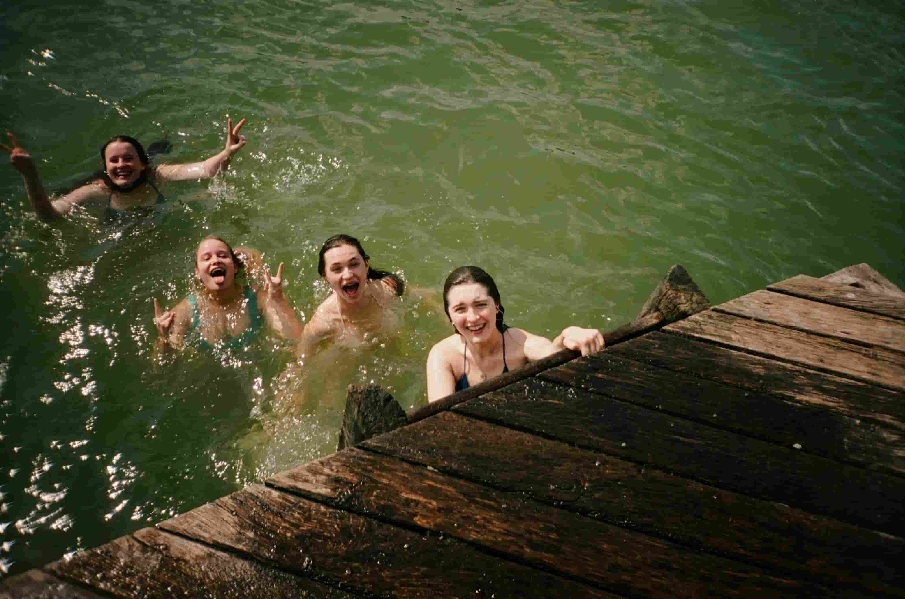

Our Purpose
To provide thrilling and safe white water rafting adventures that connect people with nature and create unforgettable memories.

To provide thrilling and safe white water rafting adventures that connect people with nature and create unforgettable memories.
Laman River was born from a desire to combine adventure with a deeper purpose. Inspired by the journeys described in the Book of Mormon, our name reflects a powerful river that symbolizes both physical challenge and spiritual growth.
We believe that white water rafting is more than just an adrenaline-filled experience—it's a chance to reflect, to connect, and to strengthen values like courage, unity, and faith. Just as ancient travelers faced unknown waters with determination and trust, our guests ride the river with that same spirit of purpose and discovery.
Founded by a team who values integrity and joy in the journey, Laman River invites you to explore nature, feel the thrill of the rapids, and leave inspired to live with greater righteousness and strength.